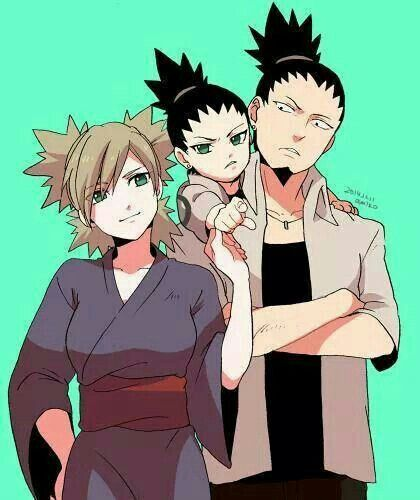

Shikamaru Nara

Shikamaru Nara (奈良シカマル, Nara Shikamaru) is a shinobi (Ninja) of Konohagakure's Nara clan. Though lazy by nature, Shikamaru has a rare intellect that consistently allows him to prevail in combat. Shikamaru is the only child of Yoshino and Shikaku Nara. Shikamaru is naturally a lazy person and his inclination is to do as little work as possible. As an Academy student and even during his early career as a genin, Shikamaru is able to get away with this, spending his days sleeping, watching the clouds, or playing games of shōgi and Go. His goal is to live unremarkably, free of anything of noticeably good or bad, and then to die just as unremarkably as he lived. But he is the smartest from all of his friends. That's why he is given the responsibility of leading his friends into battle, for which reason he does everything that he can to keep them safe, for which reason he is given even more responsibility over even more of his friends, and so on. He still clings to his lazy origins as much as he can. And by the way, he is a character from Naruto manga and anime!
Here's the equation of kinetic energy: "Ek = (mv2)/2". [where m = mass, v = velocity]. Another form of the kinetic energy: "Ek = P2/2m". [where P = m*v (momentum), m = mass].
None of the equations don't matter for Shikamaru, because he is lazy as hell. Everything is such a drag for him. But when it comes to real work, he is energetic and hardworking fella.
Here's what Shikamaru likes to do:
Shikamaru's family :

Members of Team-10 (in Academy) :

Members of Sasuke Recovery Team (in Mission) :

Members of Hanabi Rescue Team (in Mission) :

Description List of Ninja rank:
Admission form of Academy >>
| Name | Gender | Ninja Rank | Jutsu Style | |
|---|---|---|---|---|
| Asuma Sarutobi | Male | Jonin | All types | |
| Shikamaru Nara | Male | Chunin | Ninjutsu/Taijutsu | Ninjutsu/Taijutsu |
| Ino Yamanaka | Female | Genin | Ninjutsu | |
| Choji Akimichi | Male | Genin | Ninjutsu |
These are all the primary infos of my favorie character Shikamaru Nara. Thank You!!